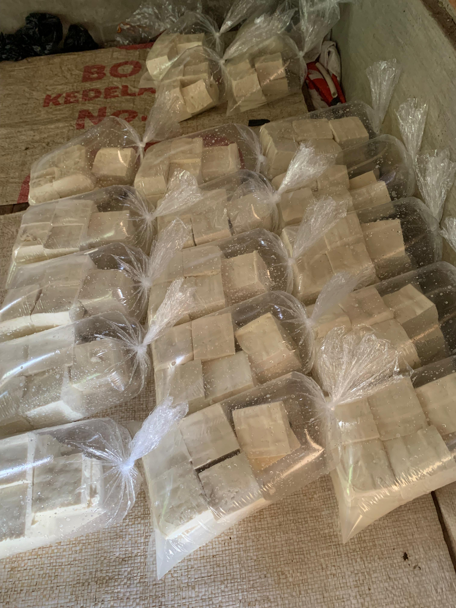
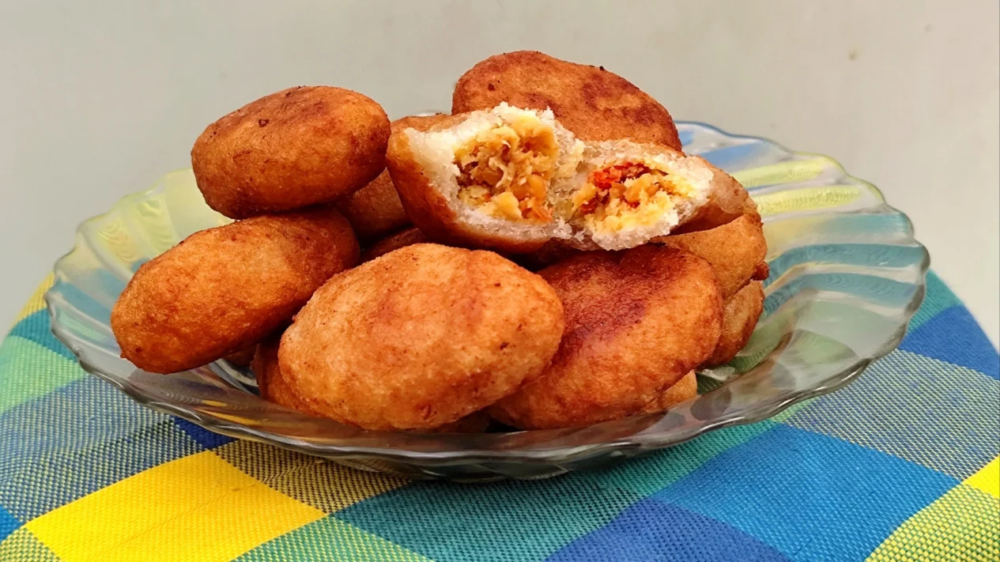
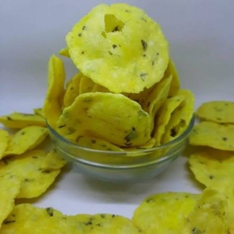

Daftar UMKM Desa

Pabrik Tahu
H.Iis Ishaq
Kp.Cibalanarik Rt21 Rw06 Desa Cibalanarik Kec.Tanjungjaya
Makanan & Minuman
Lihat Detail →
Pabrik Tepung Tapioka (Aci)
Haji Munawaroh
Kp.Cibalanarik Rt35 Rw06 Desa Cibalanarik Kec.Tanjungjaya
Bahan baku
Lihat Detail →
Kerajinan Batok Kelapa
Bapak Ucu
Kp.Cileungsing Rt18 Rw09 Desa Cibalanarik Kec.Tanjungjaya
Kerajinan
Lihat Detail →
Skotlet
Engkus Kusnadi
Kp.Rancakawung Rt08 Rw03 Desa Cibalanarik Kec.Tanjungjaya
Variasi mobil dan motor
Lihat Detail →
Bordir
Ibu Omih
Kp.Ciloklak Rt13 Rw07 Desa Cibalanarik Kec.Tanjungjaya
Mukena dan gamis
Lihat Detail →

